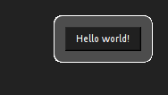

| Safe Haskell | None |
|---|
Libnotify
Description
High level interface to libnotify API
- data Notification
- display :: Mod Notification -> IO Notification
- display_ :: Mod Notification -> IO ()
- close :: Notification -> IO ()
- data Mod a
- summary :: String -> Mod Notification
- body :: String -> Mod Notification
- icon :: String -> Mod Notification
- timeout :: Timeout -> Mod Notification
- data Timeout
- category :: String -> Mod Notification
- urgency :: Urgency -> Mod Notification
- data Urgency
- image :: Pixbuf -> Mod Notification
- class Hint v where
- hint :: String -> v -> Mod Notification
- nohints :: Mod Notification
- action :: String -> String -> (Notification -> String -> IO a) -> Mod Notification
- noactions :: Mod Notification
- reuse :: Notification -> Mod Notification
- class Monoid a where
- (<>) :: Monoid m => m -> m -> m
Notification API
display :: Mod Notification -> IO NotificationSource
Display notification
>>>token <- display (summary "Greeting" <> body "Hello world!" <> icon "face-smile-big")
You can reuse notification tokens:
>>>display_ (reuse token <> body "Hey!")
display_ :: Mod Notification -> IO ()Source
Display and discard notification token
>>>display_ (summary "Greeting" <> body "Hello world!" <> icon "face-smile-big")
close :: Notification -> IO ()Source
Close notification
Modifiers
summary :: String -> Mod NotificationSource
Set notification summary
>>>display_ (summary "Hello!")
body :: String -> Mod NotificationSource
Set notification body
>>>display_ (body "Hello world!")
icon :: String -> Mod NotificationSource
Set notification icon
>>>display_ (icon "face-smile")
The argument is either icon name or file name
timeout :: Timeout -> Mod NotificationSource
Set notification timeout
Timeout after which notification is closed
category :: String -> Mod NotificationSource
Set notification category
urgency :: Urgency -> Mod NotificationSource
Set notification urgency
The urgency level of the notification
image :: Pixbuf -> Mod NotificationSource
Set notification image
Add a hint to notification
It's perfectly OK to add multiple hints to a single notification
Methods
hint :: String -> v -> Mod NotificationSource
nohints :: Mod NotificationSource
Remove all hints from the notification
Arguments
| :: String | Name |
| -> String | Button label |
| -> (Notification -> String -> IO a) | Callback |
| -> Mod Notification |
Add an action to notification
It's perfectly OK to add multiple actions to a single notification
>>>display_ (action "hello" "Hello world!" (\_ _ -> return ()))

noactions :: Mod NotificationSource
Remove all actions from the notification
>>>let callback _ _ = return ()>>>display_ (summary "No hello for you!" <> action "hello" "Hello world!" callback <> noactions)
reuse :: Notification -> Mod NotificationSource
Reuse existing notification token, instead of creating a new one
If you try to reuse multiple tokens, the last one wins, e.g.
>>>foo <- display (body "foo")>>>bar <- display (body "bar")>>>display_ (base foo <> base bar)
will show only "bar"
Concenience re-exports
class Monoid a where
The class of monoids (types with an associative binary operation that has an identity). Instances should satisfy the following laws:
mappend mempty x = x
mappend x mempty = x
mappend x (mappend y z) = mappend (mappend x y) z
mconcat =
foldrmappend mempty
The method names refer to the monoid of lists under concatenation, but there are many other instances.
Minimal complete definition: mempty and mappend.
Some types can be viewed as a monoid in more than one way,
e.g. both addition and multiplication on numbers.
In such cases we often define newtypes and make those instances
of Monoid, e.g. Sum and Product.
Methods
mempty :: a
Identity of mappend
mappend :: a -> a -> a
An associative operation
mconcat :: [a] -> a
Fold a list using the monoid.
For most types, the default definition for mconcat will be
used, but the function is included in the class definition so
that an optimized version can be provided for specific types.
Instances
| Monoid Ordering | |
| Monoid () | |
| Monoid All | |
| Monoid Any | |
| Monoid ByteString | |
| Monoid [a] | |
| Monoid a => Monoid (Dual a) | |
| Monoid (Endo a) | |
| Num a => Monoid (Sum a) | |
| Num a => Monoid (Product a) | |
| Monoid (First a) | |
| Monoid (Last a) | |
| Monoid a => Monoid (Maybe a) | Lift a semigroup into |
| Monoid (Mod a) | |
| Monoid b => Monoid (a -> b) | |
| (Monoid a, Monoid b) => Monoid (a, b) | |
| (Monoid a, Monoid b, Monoid c) => Monoid (a, b, c) | |
| (Monoid a, Monoid b, Monoid c, Monoid d) => Monoid (a, b, c, d) | |
| (Monoid a, Monoid b, Monoid c, Monoid d, Monoid e) => Monoid (a, b, c, d, e) |